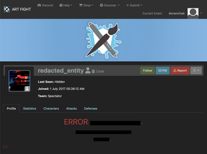
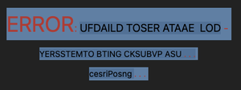
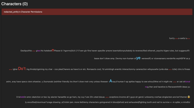
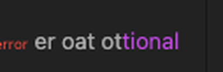
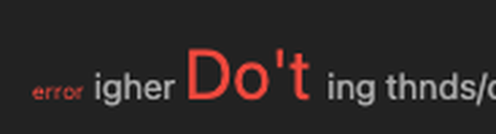
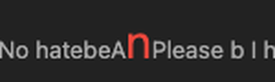
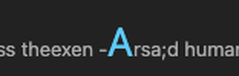
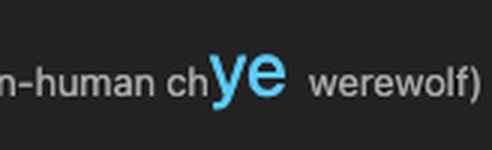

Odd cipher found on an ArtFight profile
Source: Reddit r/ciphers — “Odd cipher found on artfight profile”, posted by u/fuckinhballin.
Original profile: https://artfight.net/~redacted_entity (ArtFight user redacted_entity).
The ciphertext and the rules text below are the poster's own transcription; the screenshots in the next section show how the profile looks on the site. I could not open either page myself (Reddit returned HTTP 403 to my fetch; ArtFight is behind a Cloudflare challenge, which I did not try to get around), so I have not read any replies, and the screenshots below are my only direct view of the live profile.
The profile as it appears on the site



The three lines in the answer below are the text inside the black bars (black on black, so invisible until selected — Figure 2). On the page they read, in order: ERROR: ▮▮▮ -, ▮▮▮ . . ., ▮▮▮ . . ., then [ ] — it reads like a failed-load log: an error, a status line, a “Processing …” line, and an empty list.
Answer
→ FAILED TO LOAD USER DATA exact anagram
→ SUBVERTING SYSTEM BACKUPS TO SUBVERTING firm; rest likely; order open
→ Processing exact anagram
It is not a substitution cipher, so no Caesar shift could ever have worked. Each line is the letters of an ordinary English phrase rearranged — the letters themselves are untouched, including the capital “P” in Processing. The three lines read like a computer error/status log (“FAILED TO LOAD USER DATA … Processing”), which fits the profile's glitchy “error” theme: the rules text is full of the word “error” and is itself visibly corrupted (I restore as much of it as I can in the rules section below, using its colour coding as a key). This is most likely a deliberate glitch-text effect rather than a secret meant to resist solving.
Confidence. Lines 1 and 3: very high — every one of the 20 and 10 letters is used exactly once, with nothing left over. Line 2: SUBVERTING is well supported (see below); the remaining 15 letters fit SYSTEM BACKUPS TO exactly, but the data do not fix the word order or BACKUPS/SYSTEMS plurals, and the trailing “. . .” (visible in Figure 1) suggests the line continues or is a status message. Treat line 2 as a good reading, not a certainty.
Why shifts fail, and how this was spotted
A Caesar shift replaces every letter with a different one, so a shifted text has different letters from its plaintext. Here the multiset of letters in each line is identical to a plausible plaintext (counts below), so the cipher type is a pure transposition / anagram. The OP tried 25 shifts, forward and reversed — a reversed string is still the same letters in a new order, but reading backwards doesn’t restore these lines, so the shuffle isn’t a simple reversal.
How I found them: cesriPosng has the same ten letters as “Processing” (and keeps “ces” and “ng” intact). Line 1 contains fragments AIL, TO, SER, ATA, LO that suggest FAILED TO LOAD USER DATA; the letter count then matched exactly. Line 2 holds SUBV, ER, TING, STEM, CK.
UFDAILD TOSER ATAAE LOD
| letter | A | D | E | F | I | L | O | R | S | T | U |
|---|---|---|---|---|---|---|---|---|---|---|---|
| in cipher | 4 | 3 | 2 | 1 | 1 | 2 | 2 | 1 | 1 | 2 | 1 |
| in plaintext | 4 | 3 | 2 | 1 | 1 | 2 | 2 | 1 | 1 | 2 | 1 |
Identical letter counts: same letters, different order. (20 letters)
YERSSTEMTO BTING CKSUBVP ASU
| letter | A | B | C | E | G | I | K | M | N | O | P | R | S | T | U | V | Y |
|---|---|---|---|---|---|---|---|---|---|---|---|---|---|---|---|---|---|
| in cipher | 1 | 2 | 1 | 2 | 1 | 1 | 1 | 1 | 1 | 1 | 1 | 1 | 4 | 3 | 2 | 1 | 1 |
| in plaintext | 1 | 2 | 1 | 2 | 1 | 1 | 1 | 1 | 1 | 1 | 1 | 1 | 4 | 3 | 2 | 1 | 1 |
Identical letter counts: same letters, different order. (25 letters)
cesriPosng
| letter | C | E | G | I | N | O | P | R | S |
|---|---|---|---|---|---|---|---|---|---|
| in cipher | 1 | 1 | 1 | 1 | 1 | 1 | 1 | 1 | 2 |
| in plaintext | 1 | 1 | 1 | 1 | 1 | 1 | 1 | 1 | 2 |
Identical letter counts: same letters, different order. (10 letters)
How the scramble behaves
It is not a uniform random permutation: short pieces of the plaintext survive intact (AIL, SER, ATA, TING, SUBV, STEM, CES, NG …). The pictures colour the plaintext cut into the fewest pieces that can be re-ordered to give the cipher (a “minimum common string partition”, found by exhaustive search; ties are possible so this is one minimum tiling). The tilings were computed on the letters only; the spaces are discussed separately below. A piece can straddle a word boundary (DTO in line 1 — see “Spaces”).
UFDAILD TOSER ATAAE LOD → FAILED TO LOAD USER DATA
20 letters; one minimum tiling needs 11 chunks (average 1.8 letters per chunk). Adjacent letter pairs of the plaintext that are still adjacent, in order, somewhere in the cipher: 10; a uniformly random reshuffle of the same letters averages 4.54 (p = 0.003 over 20,000 shuffles).
YERSSTEMTO BTING CKSUBVP ASU → SUBVERTING SYSTEM BACKUPS TO
25 letters; one minimum tiling needs 13 chunks (average 1.9 letters per chunk). Adjacent letter pairs of the plaintext that are still adjacent, in order, somewhere in the cipher: 12; a uniformly random reshuffle of the same letters averages 2.95 (p < 0.0001 over 20,000 shuffles).
cesriPosng → Processing
10 letters; one minimum tiling needs 7 chunks (average 1.4 letters per chunk). Adjacent letter pairs of the plaintext that are still adjacent, in order, somewhere in the cipher: 3; a uniformly random reshuffle of the same letters averages 1.19 (p = 0.106 over 20,000 shuffles).
What this supports: the cipher text looks like “cut the text into small pieces (mostly 1–3 letters, occasionally 4), shuffle the pieces (spaces included, see below)”, or an equivalent glitch effect. The line-2 figures are optimistic, because I chose that plaintext after searching many splits; lines 1 and 3 were fixed by the exact anagram first. It does not identify the exact generator, so it cannot by itself fix the word order in line 2. Line 3 is too short to be significant by itself (p ≈ 0.1); its solution rests on the exact 10-letter anagram.
Spaces
Selecting the text (Figure 2) shows something the transcription lost: line 1 has a double space between ATAAE and LOD (that gap is 12 px wide in the screenshot, against 7 px for the other word gaps). With it, the space counts match the plaintexts exactly: line 1 has 4 spaces (as does FAILED TO LOAD USER DATA), line 2 has 3 (as does SUBVERTING SYSTEM BACKUPS TO), line 3 has none. The simplest reading is that the word spaces are ordinary characters that get shuffled along with the letters — so two can land side by side, and the cipher's word lengths (7·5·5·3 in line 1) differ from the plaintext's (6·2·4·4·4) — rather than being laid down afterwards, which is what I assumed in the first version of this page. I did not test how likely matching space counts would be by chance.
What the pair statistics say, counting the space as a character: neighbouring pairs of the plaintext that are still neighbours, in order, in the cipher — line 1: 13 of 23 against 5.36 expected for a random permutation (p = 0.0003); line 2: 14 of 27 against 3.9 (p < 0.0001). Pairs that include a space, taken alone, are preserved only about as often as chance (line 1: 4 of 8 against 2.2, p ≈ 0.12; line 2: 2 of 6 against 1.5, p ≈ 0.48). So the spaces move, but I cannot show that they move stuck to their neighbours. A few pieces with a space in them do survive intact — D TO, SER␣ and ␣LO in line 1 (FAILED TO LOAD ↔ UFDAILD TOSER), TING␣ in line 2 — but that is about what the near-chance pair count allows. Counting the spaces as characters costs only one extra piece in the fewest-pieces tilings: 12 for line 1 (11 without), 14 for line 2 (13 without), 7 for line 3 (no spaces).
Line 2 in more detail
- SUBVERTING. The contiguous strings
SUBV(inCKSUBVP),ERandTINGare exactly what SUBVERTING needs. I enumerated all 942 splits of the 25 letters into at most four dictionary words (a ~3,900-word Oxford-derived list) and scored each by how many neighbouring letter pairs of the split also appear, in order, in the cipher (median 6, best 15). Only 116 of the 942 splits contain subverting, yet all 10 of the top-scoring ones (within one pair of the best) do. The other words in those splits are noise (“bypass mute stock subverting”), which is why the rest of the line has to be judged separately. Each split was scored in the alphabetical order its words were listed, so cross-word pairs are incidental. - The remaining 15 letters (A B C E K M O P S S S T T U Y) split into 55,267 word combinations of 2–4 words from the 30,000 most frequent words in a web word-frequency list. The two highest-scoring by word frequency are
backup systems toandbackups system to— the same words as my reading — followed by weaker, less natural ones such asback systems to up. That is a fit to common phrasing, not independent proof. - Word order is undetermined. Scoring all 24 orderings of SUBVERTING / SYSTEM / BACKUPS / TO by how many neighbouring-letter pairs the cipher preserves gives 12–15 pairs for every ordering, with no meaningful separation (my reading scores 12). Cipher
…STEMTO…mildly hints at “SYSTEM TO” being adjacent, but this is weak evidence. “Subverting system backups to …” is just the order I find most natural. Spaces as characters (new): the orders still do not separate. Across the 24 orders, 13–15 neighbouring pairs are kept and 13–15 pieces are needed; my reading keeps 14 and needs 14, in the middle of both ranges. The orders needing the fewest pieces (13) are subverting system to backups, subverting to backups system, system subverting to backups, to backups subverting system — a one-piece difference that singles out nothing.
| Top orderings by neighbour-pair preservation | pairs kept |
|---|---|
| SYSTEM TO BACKUPS SUBVERTING | 15 |
| SUBVERTING SYSTEM TO BACKUPS | 14 |
| SUBVERTING BACKUPS SYSTEM TO | 14 |
| SUBVERTING TO BACKUPS SYSTEM | 14 |
| BACKUPS SUBVERTING SYSTEM TO | 14 |
| BACKUPS SYSTEM TO SUBVERTING | 14 |
The “rules” section: does the colour coding matter?
The “Characters (0) — redacted_entity's Character Permissions” panel of the profile is where the garbled rules text sits. The poster's text transcription carries no formatting, but the screenshot does: most of the text is plain grey, while some fragments are purple, some are large red or large blue, and seven are the small red word error. My earlier reading ignored all that. The question is whether the colours say anything about how to put the text back together.
1. Style inventory (measured from the screenshot)
I hue-clustered the screenshot (scripts/style_analysis.py) and aligned every coloured span with the transcription. There are exactly 16 styled spans — four colour styles plus one emoji; everything else is plain grey. The counts agree with the transcription (7 errors, and the four purple / two red / two blue pieces all appear in it).
| Style | Pieces, as they sit in the garble | What they could be |
|---|---|---|
| error small red | 7 × the word “error” (¶1 ×2, ¶2, ¶4 ×3, ¶5) | Always the identical 5-letter word. Most likely a glitch insertion, not part of the original text. |
| purple normal size | tes: (¶2) · tional (¶4) · no (¶4) · Addi (¶5) | A single styled heading, chopped into 4 pieces: “Additional notes:” |
| LARGE red | n (¶2) · Do't (¶4) | A single styled word, “Don't”, with its n moved away from the middle |
| LARGE blue | A (¶4) · ye (¶3) | The word “Aye” (capital A first). Only three letters, so weaker evidence. |
| 😎 emoji | 1, end of ¶5 | Nothing to reunite. |
Crops of the eight non-error pieces, enlarged 3× from the screenshot (click for the full screenshot):





2. Do pieces that share a style belong together?
If the glitch effect chops the text into pieces and moves them around without stripping their formatting, then each styled word of the original would show up as a few same-coloured pieces, and putting them back together would give English. That is exactly what happens:
- Purple → “Additional notes:”. Of the 24 possible orderings of the four purple pieces, the ones that read as English are additional notes and notes additional. The ordering the garble itself suggests is the first: tional and no are still next to each other, with only a line wrap (a space) between them, and the colon sits on the last piece. As a null model I drew 4 random chunks of the same sizes (4, 6, 2, 4 characters) from the garbled text itself, 100,000 times: only 78 draws (0.08%) could be arranged into one or two common English words of 3+ letters (30,000-word frequency list), so this is not a fluke.
- Large red → “Don't”. Putting the lone n back into Do't gives Don't at once; of the five places the n could go, only one makes a contraction. This also explains why Do't looked like a “dropped letter”: the letter was not dropped, it was moved.
- Large blue → “Aye”. A + ye gives Aye (the capital A stays word-initial); the other order would be “yeA”. Real, but three letters prove little — I treat it as a probable reading, and I cannot say where it stood in the text.
- Small red “error”. Seven identical, tiny tokens: always the same word, size and colour, so there is nothing to reunite. I read them as pure insertions, although I cannot tell whether each one replaced anything. (The previous version already removed them.)
So yes: the colours are a reliable key for reassembling the styled words, because each piece keeps its style when it is moved. Two further things follow from the positions of the pieces:
- The pieces moved a long way — a distance of up to 691 characters in a 1096-character text — but tional and no did not move relative to each other, and Addi sits only 54 characters after them. Three of four pieces within one ~60-character window has roughly a 1% chance if the pieces landed at random (an after-the-fact estimate), so the heading probably stood close to the ¶4/¶5 boundary, i.e. “Additional notes:” introduces ¶5–¶6, which are indeed the “my guys are 20+ / go ham / gore” paragraphs.
- This fits a simple damage model: pieces of 1–6 characters are cut out and pasted elsewhere (Do't and tional no show the neighbours rejoining after the cut). That is the same kind of damage as the three cipher lines, only heavier and with styles attached.
Limit. Colour only helps for the 8 styled pieces (24 characters out of about 1096). All of the plain grey text has no such key, which is why the rest of the restoration stays partial.
3. What this changed in my restoration
- “Additionally,” was wrong. I had joined Addi (¶5), tional (¶4) and ly (the start of ¶6). But ly is plain grey while Addi and tional are purple, so they cannot be one word. The purple pieces make “Additional notes:” instead, which also explains the formerly unexplained leftover gtes: in ¶2. The loose ly is now an unread fragment.
- “Do't” → “Don't” now rests on evidence rather than a guess, and the large red n (previously an unplaced “An” in ¶2) is accounted for.
- “Aye” is new (colour-matched), displayed where its A sits, but its true position is unknown.
- “chars (e.g. werewolf)” lost some support. I had counted the blue ye as part of “chars (e.g.”. It belongs to Aye instead; the sentence still reads, but the letters ars (e.g. are not visibly present in ¶3 any more. They moved elsewhere, as pieces do.
- The gist below now notes the “Additional notes” section and the red/blue emphasis.
The “rules” paragraph: before and after
The posted rules text looks like the same kind of fragment-shuffling as the cipher lines, but heavier, and it is not a clean anagram per paragraph. Below is my attempt to undo it. This is a partial, best-effort reading, not a recovered verbatim original. Every phrase on the right is tied to the garbled fragments it came from: hover a phrase (or a highlighted fragment) to see the link — for the colour-matched words, all of their pieces light up, even in other paragraphs. Where I couldn't read a fragment I left an ellipsis rather than invent text. The left column now shows the original colours and sizes.
A colour-matched word is shown where its main piece sits in the garble, not necessarily where it stood in the original: Additional notes: at the start of ¶5 (where Addi is), Don't at the start of ¶4, Aye beside its A.
Restored text, plain
What the rules appear to say (gist)
- Have fun; no hate. (“fun!!” and “No hate.” survive intact; the rest of that opening is lost.)
- Don't draw my non-human characters as human, or the reverse. (with a werewolf as the example — the clearest sentence in the paragraph.)
- NSFW is restricted. “No … explicit NSFW” and “ONLY if … been given …” are both present, but the exact condition is lost.
- Romance/interaction between characters is welcome. (“Romance is cool, I'd … authentic interaction”.)
- A large red “Don't” emphasises a prohibition (“… /cigs involving my chars – cos …”; the details are mostly lost). The large blue “Aye” (yes) may be its counterpart, but I cannot say where it stood.
- Outfit suggestions are welcome. There are also caveats about “presentation”, gender and “unless specified otherwise”, but their details are mostly lost.
- A purple “Additional notes:” heading sits at the ¶4/¶5 boundary, so ¶5–¶6 are most likely that section: the owner's characters are adults (“my guys are 20+”), character battles are fine (“so go ham”), with a darker tone and a spoiler warning: “my characters going covered in blood / afraid and exhausted / fighting tooth and nail to survive <- my spoiler, be mindful.”
The gist is my interpretation of the restored phrases above; anything marked repaired or inferred there carries the same uncertainty here.
What kind of damage this is
| Type | Garbled | Restored |
|---|---|---|
| letters missing (dropped, or moved elsewhere) | Do't · chrs · goingvered · eceptions · spller, e mindful | Don't · chars · going covered · exceptions · spoiler, be mindful — for Don't the missing letter is shown to have moved (the large red n in ¶2) |
| neighbouring letters swapped | migth | might |
| letters replaced / mangled | hakely · otherwit, · cuy · ehawise | likely · otherwise, · guy · otherwise |
| spaces lost, words fused | interactionmy · hatebeAnPlease · witsyouwhe | interaction my · hate. Be … Please · with … you … when |
| stray fragments in the wrong place | “Dev”, “amp.”, “nender”, lone “y”, “b”, “D” … | (pieces of words whose other halves are elsewhere) |
| the word error inserted | oerror · errors-swful · error igher … | 7 occurrences, all in the same small red — deleted, not restored |
Some fragments have travelled between paragraphs, which is why a letter-for-letter check per paragraph fails (unlike the three cipher lines). The first three words are the ones the colours reunite:
| Word | Piece A | Piece B |
|---|---|---|
| Additional notes: | Addi (¶5), tional + no (¶4, still neighbours), tes: (¶2) | all four purple — colour evidence |
| Don't | Do't (¶4) | n (¶2, “hatebeAnPlease”) — large red, colour evidence |
| Aye (tentative) | A (¶4, “-Arsa;d”) | ye (¶3, “chye werewolf)”) — large blue, colour evidence |
| explicit | exp (end of ¶3, “expNSFW”) | licit (¶2, “hgorms)licit”) |
| ONLY | ON (¶4, “whouONne”) | LY (¶2, “licit LY if”) — both pieces are upper-case in the garble, as ONLY would be |
How much of it is restored
| Letters in the garbled text (excluding the 7 inserted “error”s) | 852 |
| Letters sitting in fragments I turned into words (colour-matched / recovered / repaired / inferred) | 650 (76%) — before the colour analysis: 637 (75%) |
| Letters in fragments I located but could not read (the ellipses) | 188 (22%) — before: 198 (23%) |
| Letters not placed anywhere | 14 — before: 17 |
| “Colour-matched” words: letters found in their source pieces | 22 of 22 (100%) |
| “Recovered” words: letters found in their source fragments | 151 of 151 (100%) |
| “Repaired” words: letters found in their source fragments (the rest were dropped letters I restored) | 402 of 506 (79%) |
| “Inferred” words: letters found in their source fragments | 24 of 29 (83%) |
“Located in fragments I turned into words” measures how much of the garble my reading accounts for, not how correct it is: a wrong reading would count too, and the colour-matched words are the only ones that are checked by something independent of my reading. The unplaced single letters: ¶2: No g licit i · ¶4: is · ¶5: bi · ¶6: f.
What I'm confident of: “Additional notes:” and “Don't” (colour-matched), the sentences about non-human characters (“Please don't draw my non-human chars (e.g. werewolf) as human or vice versa”), “No hate”, “so go ham”, “my characters going covered in blood/afraid and exhausted/fighting tooth and nail to survive <- my spoiler, be mindful”, and “outfit ideas”. Least certain: “Aye” (placement), the middle of ¶4 (e.g. “don't draw their prey”, “who … with might me”), ¶5's “character battle”, and every ellipsis. I searched once for a public copy of the original text and found none, and the live profile is behind a Cloudflare challenge that I did not try to get around, so apart from the colour evidence and the letter accounting above there is nothing to check this restoration against.
Caveats
- The text comes from the poster's transcription, which I checked by eye against Figure 2: all three lines match letter for letter (only the double space in line 1 was lost). Lines 1 and 3 reproducing perfect anagrams also supports their transcription; line 2 has no such check, because any 25 letters can be re-split into some words, so for line 2 the screenshot is the only check, and it rests on my reading of a small image.
- The screenshot shows ERROR: before line 1, a “-” after it, “. . .” after lines 2 and 3, and a lone “[ ]” at lower left. These are plain red text outside the anagrams (there is nothing in them to rearrange), so they are not part of my reading. The screenshot ends just below the “[ ]”, so I cannot say whether anything follows it.
- The rules restoration is partial and interpretive (see its own confidence notes); about a quarter of its letters sit in fragments I could not read. Only the colour-matched words (“Additional notes:”, “Don't”, “Aye”) have an independent check, and “Aye” is the weakest (three letters, position unknown).
- Selecting the text (Figure 2) shows no extra hidden text in the three bars beyond what was transcribed. I can’t rule out text elsewhere on the page, outside the screenshots.
Files
Scripts in scripts/ (Python 3.11): anagram_fast.py (bit-packed anagram finder), tiling.py (minimum chunk tiling), chunk_stats.py (neighbour-pair statistic vs. random shuffles), rank_by_chunks.py, rank2b.py (frequency-ranked splits), remainder.py, orders.py, and lettercmp.py + resid.py (per-paragraph letter-balance checks for the rules text), space_chars.py (spaces counted as characters: pair statistics, fewest-pieces tilings, the 24 line-2 orders; writes data/space_chars.json), style_analysis.py (hue-clusters the rules screenshot, aligns the styled pieces with the text, tests whether same-style pieces reunite, 100,000-draw null model; writes data/style_analysis.json and the crops in images/crops/), build.py + rules_view.py (this page); rules/corrupted.txt, rules/styles.py (the style of every coloured piece) and rules/restoration.py hold the garbled text, its styles, and my segment-by-segment restoration with the fragments each phrase came from. Screenshots in images/. Outputs in data/. Word lists used: an Oxford-derived list and a web word-frequency list from other projects on this machine.